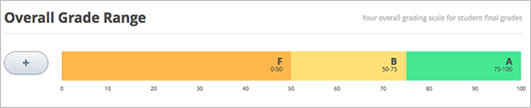
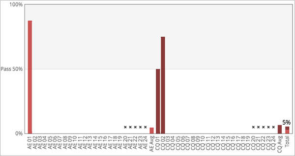

3.9. 设定计分政策¶
设定计分政策需以下几步。您需要：
Important
课程开始后，任何对课程计分政策、等级评定和评分组件的更改会影响学生的课程体验和学生的数据分析。
3.9.1. 设定分数等级¶
每个课程必须设定分数等级。例如，及格/不及格，或者从字母A-F依次评分等级。
设置分数等级：在导览列，点击 设置 之后，点击 计分 。
计分页面顶部显示控制功能。

上图样例中系统预设值以50分为基准，采用通过/不通过。
您可通过分数级距控制功能来更改相应设置。
点击图标 + 添加分数级距。
即在现有级距上添加新等级。 如下图范例，如果您在系统预设值基础上添加新等级，则级距更改 F (0 到 50), B (50 到 75), and A (75 到 100):
将鼠标移至两个级距分界线上，点击分界线并向左或向右拖拽。
移动过程中，可以看到分界线两侧的分数改变。移至想设定的分数值上松开鼠标即可。
更改分数级距名称：双击选定现有级距名称，随后开始编辑新名称。 例如，原有级距名称为 通过 ，您可双击 通过 ，随后键入 优秀 ，便可替换旧名。
但是，系统不允许更改F或不通过。
移除级距，将鼠标移至对应想移除的级距范围上，其上方将出现移除的连结，点击即可。
F或A不可移除。
{kind=link}
做出任何修改后，请务必点击页面底部保存修改。
3.9.1.1. 分数等级和证书¶
如果您计划为课程提供证书，请注意成绩在F之上的学生将有资格获得证书，反之不能获得证书。 此规则无视您设置的分数等级数量。
3.9.2. 设定宽限期¶
您可为学生设定一个作业延迟上交的宽限期。
Note
您设定的宽限期适用于全课程；而非个别作业。
在计分页面上，本功能放置在 计分规则与政策 下， 在 宽限期限 一栏内键入时间值，格式为X时：X分。
3.9.3. 设定评量类型¶
您需针对课程设置不同类型的评量，并分配好每项评量占学生总成绩的比重。
例如，您可设置
- 课后作业10次，共占总分的50%；
- 期中测试1次，占总分的20%；
- 期末测试1次，占总分的30%。
针对一门新课程，系统默认预设四种评量类型：
- 课后作业
- 实验
- 期中测试
- 期末测试
以上评量类型可直接使用，亦可修改、移除与新增。
增添新评量：在计分页面底部，点击 增添新评量 ，然后填写其下述栏位。
3.9.3.1. 评量类型相关栏位¶
每个评量类型需填写下述栏位：
评量类型名称：
这是评量的总类别，此名称对所有学生可见。
Note
同一评量类别下的所有作业在该类别中比重均相等。 例如，包含10个问题的课后作业与包含20个问题的课后作业，最后都以相同权重计算。
简称：
进入学习进度标签，可于 评量 旁边看到名称缩写。
占总分比重：
在 占总分比重 一栏中键入此评量类别下的所有作业所占比重和。
所有评量类型所占比重之和应为100。
Note
不要在此字段中键入百分比（%）符号。
作业总数：
总数为您为本课程计划设置此类别下的作业次数。
不计入总分作业数：
这是此类别下不计入总分的作业总数。计分人首先会去除作业中的最低分。
3.9.4. 在计分的小节设定评量类型¶
设定好评量类型后，在组织课程设置时，您可在课程的小节，替需要计分的题目，设定评量类型。
每个带有计分题目的小节只能包含一种评量类型。
Note
只能以小节为单位设定评量类型和到期日。不可以章或小节内的单元为单位设定评量类型和到期日。 另，您可以指定某个小节为其中一种评量类型。
更多内容请参阅 构建课程小节.
设计等级分配评量指导请参阅 设置任务类型和截止日期 。
在小节中，可以新增评量的题目。但是，在同一小节中，不能够新增不同类型的评量。
例如，如需在特定主题下新增作业与实验必须设定两个小节，一个为作业，另一个为实验。 因此，小节涵盖内容说明以及作业或实验题目。
Note
可在Studio中新增题目，而且不用设定某个小节为评量。但是，此类型的题目不会计入学生成绩。
取得设定新增题目说明请参阅 创建问题组件.
3.9.5. 学生分数查询¶
计分政策设定完成后，点选学习进度标签，学生可查看到自己的评量得分、百分比与目前成绩。

横坐标X上的条目为计分小节。分数单位格在此表中无具体显示。竖状条显示了每个题目得分。
根据评量类型，计分小节分组显示在图表中，未采用时间顺序平排列。 例如，所有的课后练习排在一起，其后依次是实验、测试。
Note
学习进度标签上横坐标X显示的评量为当前舍弃后的评量得分。您可在 configure assignment types 中设置可抛弃评量的数量。